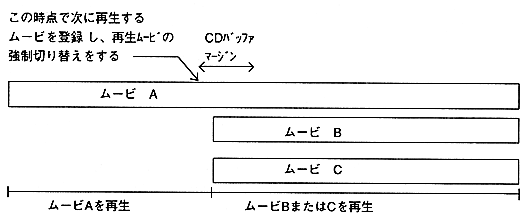

Branch playback using seamless branch
Figure 3.3 shows the case where movie A playback is interrupted and branch to movie B or movie C. When a branch condition occurs during movie A playback, the movie to be played next is registered (CPK_EntryNext function), and then the playback movie is forcibly switched (CPK_Change function). After playback of movie A is interrupted, movie B or movie C starts playing seamlessly.

Figure 3.3 Branch playback
Caution
- Move the seamless branch to the same sound content (sampling rate, number of quantization bits, number of channels) and frame rate.
- Move the seamless branch as close to the CD-ROM as possible. Also, arrange from the inside to the outside of the CD-ROM in the branching order.
- Seamless branch cannot be used for multi-movie playback.